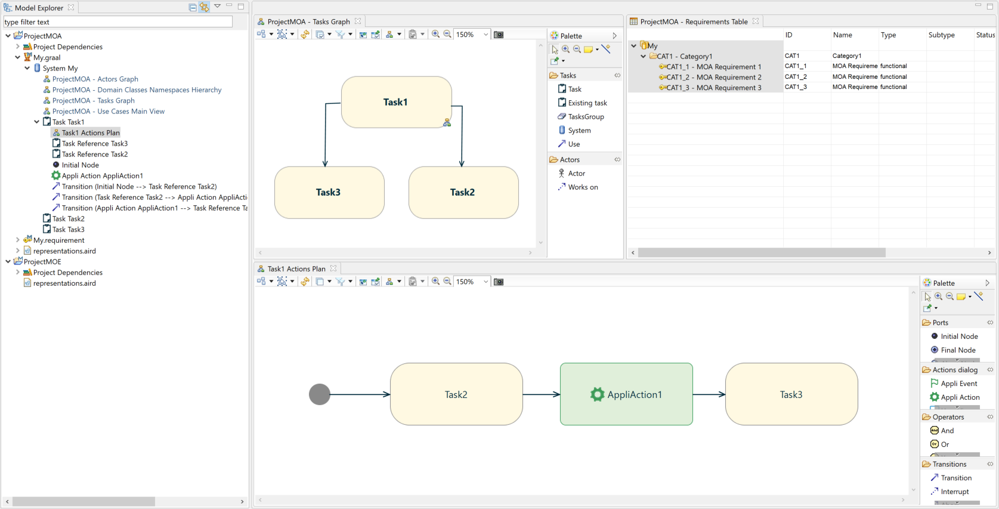
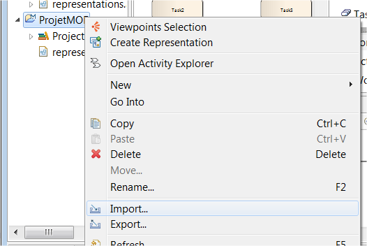
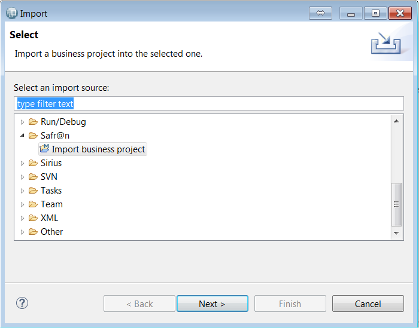
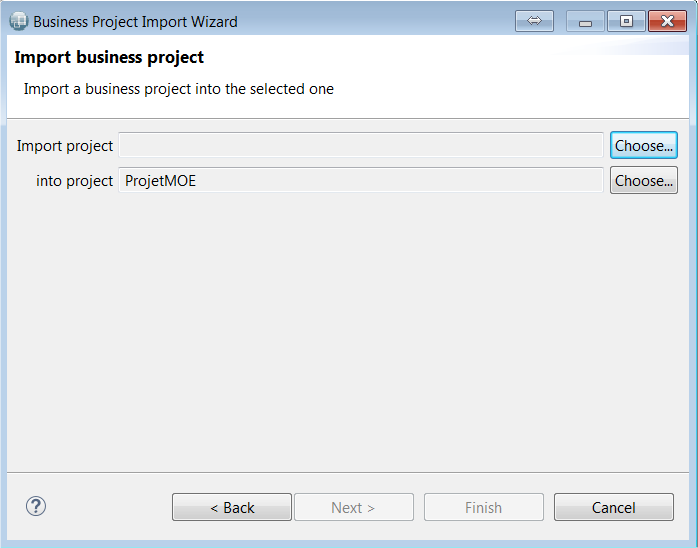
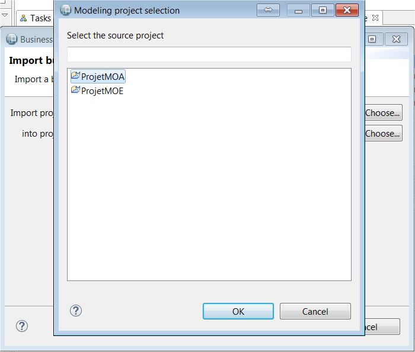
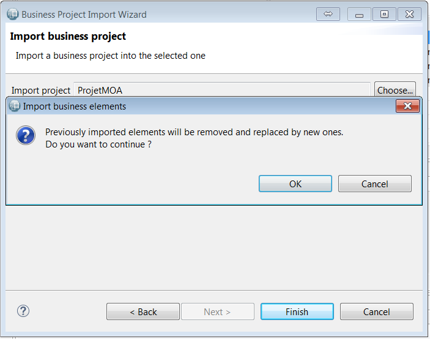
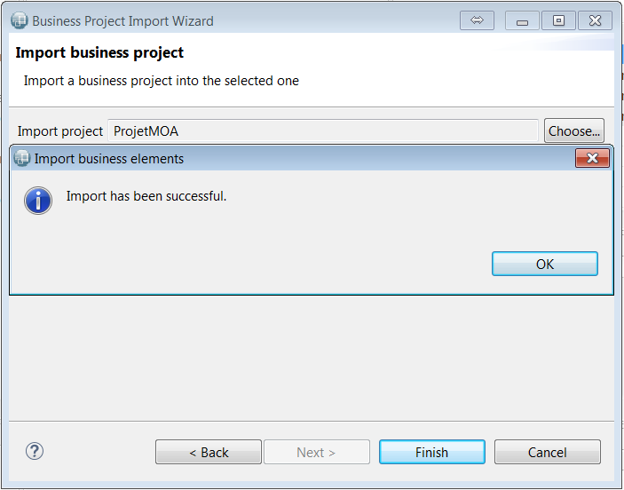
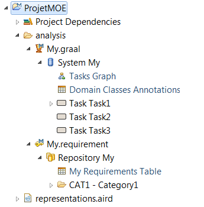
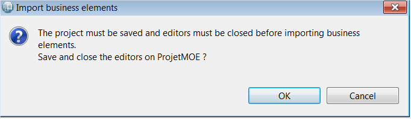
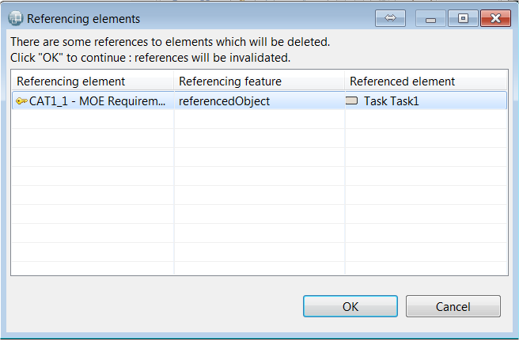

Copyright © 2008, 2023 Obeo - All rights reserved. This program and the accompanying materials are made available under the terms of the Eclipse Public License v1.0
Dans le cadre de IS-Designer, les équipes MOA et MOE travaillent sur des projets différents et des modèles différents.
L'équipe MOE a néanmoins besoin des modèles réalisés par l'équipe MOA pour travailler.
Les cycles de vie des projets MOA et MOE pouvant être décalés, il est intéressant de bénéficier d’une fonctionnalité permettant d’importer le contenu d’un projet MOA dans un projet MOE. Ainsi l'équipe MOE peut travailler sur une version stable des spécifications.
La fonctionnalité Business project import permet justement d’importer, dans un projet, les modèles réalisés dans un projet MOA. Les modèles qui seront importés sont les modèles de type :
Les modèles MOA sont importés au sein d’un répertoire analysis créé dans le projet MOE. Les modèles précédemment importés sont écrasés et remplacés par la nouvelle version.
L'équipe MOA n’a pas vocation à modifier les modèles inclus dans le répertoire
analysis. Si des modifications ont été faites elles seront supprimées au prochain import.
Il existe néanmoins une exception à cette règle : les exigences provenant de l'équipe MOA peuvent être rattachées à des éléments modélisés par l'équipe MOE. L'équipe MOE peut donc ajouter des liens de ces exigences vers ses propres modèles, ces liens seront conservés lors de l’import suivant.
Supposons un projet MOA contenant un modèle Graal et un modèle Requirement et un projet MOE vide pour l’instant?

L’import métier se lance au moyen d’un Import wizard spécifique accessible par le menu contextuel d’un projet

L’assistant se nomme Import business project et est disponible dans la catégorie IS-Designer

L’assistant permet de choisir le projet MOA (Import project) et le projet MOE (into project) en utilisant les boutons
Choose.
Quand l’import a été lancé en ayant sélectionné le projet MOE, celui-ci est déjà pré-renseigné dans l’assistant.


Une fois que les deux projets ont été spécifiés, il est possible de lancer l’import en cliquant sur
Finish.
Un message d’avertissement prévient l’utilisateur que les modèles qu’il avait précédemment importés vont être complètement remplacés par les nouvelles versions. Il est encore possible d’annuler l’import à ce moment.

Un message avertit l’utilisateur que l’import a été correctement réalisé.

Les modèles du projet MOA sont importés dans un répertoire
analysis (modèles Graal, Requirement et Entity).
Les diagrammes sont également importés et les points de vue correspondant sont automatiquement activés sur le projet MOE.

Les imports suivants peuvent être lancés de la même manière.
Pour que l’import s’exécute, le projet MOE doit être sauvegardé et toutes les représentations (diagrammes, tableaux et arbres) doivent être fermées. Si ce n’est pas le cas, un message avertit l’utilisateur que le projet MOE va être sauvegardé et les éditeurs fermés.

Les modèles provenant du projet MOA ne doivent pas être modifiés par l'équipe MOE. La seule exception concerne les exigences qu’il est possible d’associer à des éléments de l'équipe MOE. Ces liens ajoutés seront conservés au prochain import. Dans le cas où des éléments des modèles MOE référencent des éléments des modèles MOA une boîte de dialogue affiche les références concernées, ces références seront supprimées au moment de l’import. L’utilisateur peut encore annuler l’import à ce moment.
